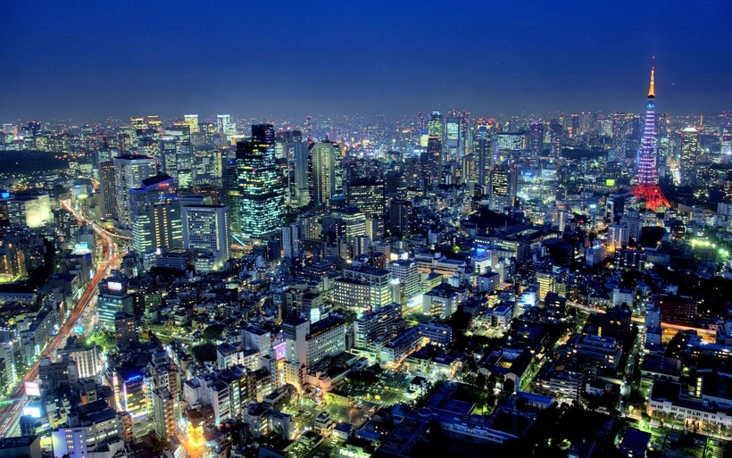
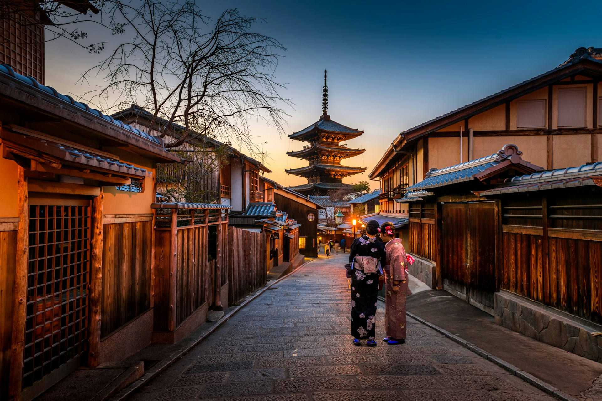
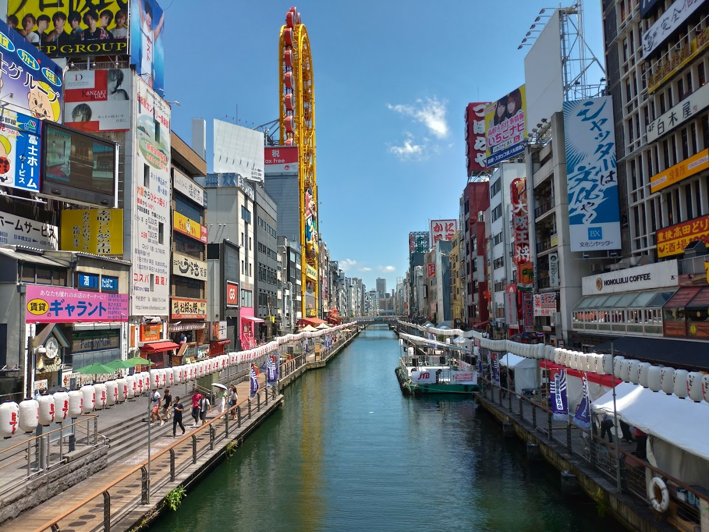

Страна восходящего солнца
Япония-страна где древние храмы стоят рядом с небоскребами, а скоростные поезда мчатся мимо рисовых полей и горы Фудзи. На этом сайте вы узнаете, где находится Япония,какая там валюта и климат, и познакомитесь с самыми известными городами.
Япония — островное государство в Восточной Азии. Она расположена в Тихом океане и омывается Японским и Охотским морями. Страна состоит из более чем 14 тысяч островов, но почти всю территорию занимают четыре главных: Хонсю, Хоккайдо, Кюсю и Сикоку.
На всей территории страны одно время — JST (UTC+9). Перехода на летнее время в Японии нет. Разница с Москвой — +6 часов: когда в Москве полдень, в Токио уже 18:00.
Денежная единица — японская иена (¥, код JPY). В ходу монеты в 1, 5, 10, 50, 100 и 500 иен и банкноты в 1000, 5000 и 10 000 иен. В Японии до сих пор очень любят расплачиваться наличными.
Страна вытянута с севера на юг, поэтому климат разный: на Хоккайдо зимой много снега, а на юге, на Окинаве, тепло почти круглый год. Весной цветёт сакура, в июне–июле идёт сезон дождей, осенью краснеют клёны, а в конце лета бывают тайфуны.

Столица Японии · около 14 млн жителей (с пригородами — около 37 млн) Токио — столица Японии и один из самых больших городов мира. Это город контрастов: ультрасовременные небоскрёбы, яркие экраны на перекрёстке Сибуя и тихие старинные храмы, спрятанные среди улиц. Что посмотреть: • Телебашня Токио Скайтри высотой 634 метра • Самый оживлённый пешеходный перекрёсток — Сибуя • Старейший храм города Сэнсо-дзи в районе Асакуса • Парк Уэно с зоопарком и музеями

Древняя столица · город храмов и садов Киото более тысячи лет был столицей Японии и сохранил дух старины. Здесь около тысячи шестисот храмов, тихие сады и квартал Гион, где до сих пор можно встретить гейш в традиционных кимоно. Что посмотреть: • Кинкаку-дзи — Золотой павильон • Фусими Инари — тысячи красных ворот тории • Бамбуковая роща в районе Арасияма • Квартал Гион с деревянными домами

Город вкусной еды и ярких вывесок Осака — один из крупнейших городов страны, которую называют «кухней Японии». Люди приезжают сюда, чтобы попробовать уличную еду, погулять по ярким улицам и увидеть величественный замок. Что посмотреть: • Замок Осака с большим парком • Улица Дотомбори с огромными светящимися вывесками • Местные блюда: такояки и окономияки • Парк развлечений Universal Studios Japan